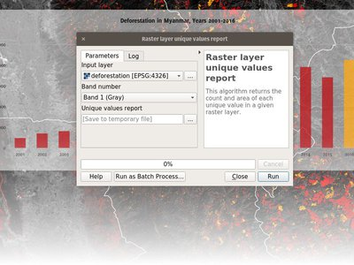

Registro de alterações para o QGIS 3.0¶
O maior lançamento do QGIS de todos os tempos! QGIS 3.0 é uma grande revisão e limpeza do nosso amando Código Aberto SIG. QGIS 3.0 traz uma lista massiva de novas mudanças - os destaques dos quais nos tentamos abordar aqui. Como sempre podemos lembrar você que QGIS é um projeto de Código Aberto, e se você puder, considere apoiar o nosso trabalho através de “doações <http://www.qgis.org/en/site/getinvolved/donations.html?highlight=donate>`__, sponsorship ou contribuições para a documentação do código, website e assim por diante.
Agradecimentos
We would like to thank the developers, documenters, testers and all the many folks out there who volunteer their time and effort (or fund people to do so). From the QGIS community we hope you enjoy this release! If you wish to donate time, money or otherwise get involved in making QGIS more awesome, please wander along to qgis.org and lend a hand!
QGIS is supported by donors and sponsors. A current list of donors who have made financial contributions large and small to the project can be seen on our donors list. If you would like to become and official project sponsor, please visit our sponsorship page for details. Sponsoring QGIS helps us to fund our six monthly developer meetings, maintain project infrastructure and fund bug fixing efforts. A complete list of current sponsors is provided below - our very great thank you to all of our sponsors!
QGIS é um software livre e você está sob nenhuma obrigação de pagar nada para usá-lo - na verdade, queremos encorajar as pessoas a usá-lo, independentemente da sua situação financeira ou social - nós acreditamos que capacitar as pessoas com ferramentas de tomada de decisão espacial resulta em uma sociedade melhor para o futuro de toda a humanidade.
- Sponsors for QGIS version 3.0
- Geral
- Recurso: Remover o complemento de estatística zonais
- Recurso: Remover o complemento de conversor dxf2shp
- Recurso: Remova o raster complemento oracle orfão
- Recurso: Remover provedor TauDEM do núcleo de processamento
- Funcionalidade: Mais ajuda e possibilidade de configurar a localização dos arquivos de ajuda do QGIS
- Recurso: Migrar fotos, WebView e arquivo por nome Anexo
- Funcionalidade: Provedores otb e lidartools removidos do processamento
- Interface do usuário
- Recurso: Ativas docas flutuante com abas
- Recurso: Adicionar suporte para zoom de roda de mouse de resolução fina
- Recurso: adicionar barra de pesquisa à caixa de diálogo Configurar atalhos
- Recurso: Barra de localização
- Recurso: mais edição sem bloqueio online
- Recurso: Adicionar uma opção para mostrar menus de cor para usuários
- Recurso: Configuração de cores para a decoração da seta norte da tela do mapa
- Recurso: tela de mapa aprimorada ‘salvar como imagem
- Recurso: Alternar a visibilidade dos painéis abertos na janela principal
- Recurso: Melhor consistência na interface do usuário
- Recurso: Abra camadas em um grupo único
- Feições 3D
- Expressões
- Recurso: Novo expressão de variáveis
- Recurso: nova variável de expressão global @qgis _locale
- Recurso: Novas variáveis de expressão para configuração do mapa
- Recurso: Novas funções de expressão
- Recurso: Expor variável @aparente em funções agregadas
- Feature: Item_variables expression function inside compositions
- Documentação
- Simbologia
- Recurso: Visibilidade da camada de símbolo definida pelos dados
- Recurso: salvar e restaurar a rampa de cores usada para renderização de falsar cor de banda única
- Recurso: Adicionar Pontos e Polegadas às unidades de símbolos disponíveis
- Recurso: Nova ferramenta de botão de rampa colorido
- Recurso: Re-trabalho de gerenciamento de estilo e atualização
- Recurso: Suporta a definição de cor e transparência em vários itens para renderizadores de raster.
- Recurso: Mostrar um controle deslizante alfa no menu suspenso do botão de cor
- Recurso: ações de barras de ferramentas de extensão de raster dão suporte a renderização falsa cor
- Recurso: suporte a transparência para o renderizador de paleta
- Recurso: alongamento automático de varredura ao atualizar a tela
- Recurso: Controle sobre as margens do conteúdo da anotação
- Recurso: as anotações podem ser estilizadas usando estilos de símbolo de preenchimento
- Recurso: Renderizador de cluster de pontos
- Matéria: NOVOS ALGORITMOS DE COLORAÇÃO DE MAPAS NO QGIS 3.0
- Característica: Nova opção de rampa de cores de cores “predefinidas”
- Recurso: Permitir que as camadas de símbolos sejam temporariamente desativadas
- Recurso: estilo fácil de rasters discretos
- Rótulo
- Diagramas
- Renderização
- Digitalização
- Recurso: Seleção de vértice de intervalo na ferramenta de nó
- Recurso: Adicionar opção de valor Z padrão
- Recurso: o recurso Mover agora se beneficia com a digitalização avançada
- Feature: Added functionality to copy/move feature to move feature map tool
- Recurso: rastreamento com deslocamento
- Recurso: revisão da ferramenta Vértice
- Recurso: Ferramenta de vértice: marcadores de ponto médio para adicionar vértices
- Recurso: ferramenta de vértice: linha continua
- Recurso: Ferramenta de vértices: suporte para painel digitalizador avançado
- Gestão de dados
- Formulários e ferramentas
- Recurso: Permitir rótulos de controle para ferramentas de edições individuais
- Recurso: Permitir a configuração de botões de recurso de link / desconexão no ferramenta do editor de relações
- Recurso: visibilidade condicional para guias e caixas de grupo
- Feição: Elemento de edição padrão mais inteligentes com plugins para selecioná-los
- Feature: Field constraints can be enforced or not
- Feature: Add layer scoped actions
- Feature: Show field values in autocompleter in form filter mode
- Feature: Add zoom to features and flash features shortcuts in select by form dialog
- Feature: Add between/not between to numerical fields in select by form
- Legenda da camada
- Compositor de mapas
- Feature: Control over drawing of composer table grid horizontal & vertical lines
- Feature: Drag qpt to QGIS to create new composer from template
- Feature: Allow customization of line spacing for composer legend item labels
- Feature: Allow choice of CRS for map items
- Feature: Holding shift while drawing polyline/polygon constrains line angles
- Feature: More data definable controls
- Feição: Revisão do Compositor de Mapas
- Ferramenta de anáilise
- Processamento
- Feature: New algorithm for offsetting lines
- Feature: New algorithm for single sided buffers
- Funcionalidade: Adicionar escolha do método de simplificação para simplificar
- Feature: support for output geometry types in models
- Feature: Angle threshold for smooth algorithm
- Feature: Better support for Z/M dimensions and curved geometries
- Feature: Raster analysis algorithms added to Processing
- Feature: New algorithm to extract specific nodes
- Feature: Expose zonal statistics from Zonal statistics plugin in toolbox
- Feature: Add a spatialite execute SQL algorithm
- Recurso: Novo algoritmo para estender linhas
- Recurso: Novo extrato por algoritmo de expressão
- Feature: Add import into spatialite algorithm
- Recurso: Algoritmos de interpolação
- Feature: New algorithm to compute geometry by expression
- Feature: Snap geometries to layer algorithm
- Feature: New input type for expressions
- Feature: SplitWithLines
- Feature: Pole of inaccessibility algorithm
- Feature: Extract by attribute can extract for null/notnull values
- Feature: Create attribute index algorithm
- Feature: New ‘drop geometries’ algorithm
- Feature: New universal ‘basic stats for field’ algorithm
- Feature: Port heatmap plugin to processing algorithm
- Feature: New algorithm to orthagonalize geometries
- Feature: Network analysis algorithms
- Feature: Export processing models as PDF/SVG
- Feature: New algorithm to truncate tables
- Feature: Added ‘invalid feature handling’ option
- Feature: Algorithm to fix invalid geometries using native makeValid() implementation
- Feature: Add search to Get Scripts and Models dialog
- Feature: Generic centroid algorithm
- Feature: Improved Extract nodes algorithm
- Feature: New algorithm for translating (moving) points
- Feature: Improved processing modeler window
- Feature: New raster unique values report algorithm
- Feature: Remove TauDEM provider from core Processing
- Recurso: baixar um arquivo do processamento
- Feature: Optimised points along geometry algorithm
- Feature: Sort by expression algorithm
- Aplicação e opções de projetos
- Browser
- Data Providers
- Feature: New unified ‘add layer’ dialog
- Feição: GeoPackage
- Feature: Support all GDAL writable raster formats for ‘Save as’ dialog on raster layers
- Feature: Support for Z/M geometries in gpkg, spatialite and memory layer provider
- Feature: Unique and not-null constraint handling
- Feature: GeoNode integration
- Feature: Detect literal default values for spatialite provider
- Feature: Create attribute index support for spatialite provider
- Funcionalidade: Adicionar suporte para matrizes
- Feature: Support for HStore in PostGIS data provider
- Feature: Add auto-discovery of relations for PostgresQL
- Funcionalidade: Dependências de dados entre camadas
- Feature: dxf export: support reprojection
- Feature: Load/save style in database for GPKG and Spatialite
- Feature: Improved handling of defaults
- Servidor QGIS
- Complementos
- Feature: Remove trusted status from Plugin Manager
- Feature: Offline editing: Add flag to only copy selected features
- Funcionalidade: GDALTools foi movido para Processamento
- Funcionalidade: permitir a instalação de complementos a partir de pacotes ZIP locais
- Feature: Plugins can provide a custom help in Expression window
- Programabilidade
Sponsors for QGIS version 3.0¶
Ouro¶
|imagem2| Ouro : 9000 EUR
Land Vorarlberg |
|Grupo de usuários do QGIS Suíça| Grupo de usuários do QGIS Suíça |

Prata¶
|imagem5| Prata : 3000 EUR
|
Corporação AERO ASAHI |
|Grupo de usuário do QGIS Dinamarca| Grupo de usuário do QGIS Dinamarca |
|
ARTOGIS a/s |
|Grupo de usuários do QGIS Alemanha| Grupo de usuários do QGIS Alemanha |
|
OPENGIS.ch GmbH |
Terraplan |
|
Escritório de Obras Públicas, Gerenciamento de Risco de Inundação e Gerenciamento de Seção de Dados |
WIGeoGIS |


Bronze¶
|imagem14| Bronze : 500 EUR
|
2D3D.SIG |
|Integrar Sustentabilidade Pty Ltd| Integrar Sustentabilidade Pty Ltd |
|
Tecnologia Ager |
LandPlan OS GmbH |
Alta ehf |
Lutra Consulting |
Asociación Geoinnova |
MHTC Ltd |
|
Conhecimento automático |
MappingGIS |
|
BGEO Open SIG, SL |
Mapzen |
Cawdor Forestry |
Mierune LLC |
Chartwell Consultants Ltd. |
OSGeo.JP |
City of Canning |
Open Geo Groep |
City of Canning |
Pixalytics |
Datenbankgesellschaft mbH |
|Grupo de usuários do QGIS Brasil| Grupo de usuários do QGIS Brasil |
Dr. Kerth + Lampe Geo-Infometric GmbH |
|Grupo de usuários do QGIS Suécia| Grupo de usuários do QGIS Suécia |
FORNAT AG |
QTibia Engineering |
|
Forest Design SRL |
Royal Borough of Windsor and Maidenhead |
GAIA mbH |
SOLTIG (Soluciones en Tecnologías de Información Geográfica) |
|
Support SIG Sp. z o.o. |
Septima |
GKG Kassel, (Dr.-Ing. Claas Leiner) |
Solargis s.r.o. |
|
Gaia3D, Inc. |
Syddjurs Kommune |
Gemeente Gouda |
TerreLogiche |
GeoS Geodätische Software Andreas Hellinge |
Trage Wegen vzw |
Geographica |
Urbsol |
Gis3W |
WAGNER-IT |
Infraplan Engineering Services Pvt. Ltd. |
WhereGroup GmbH & Co. KG |
Ingenieurbüro Kauppert |
tkt teleconsult Kommunikationstechnik GmbH |
Insurance Australia Group Limited (IAG) |


Geral¶
Recurso: Remover o complemento de estatística zonais¶
Isso é agora completamente exposto via processamento, a qual é a local lógico para essa feição residir
Recurso: Remover o complemento de conversor dxf2shp¶
Esta funcionalidade está disponível em OGR e não há mais a necessidade de um complemento QGIS para fazer esta tarefa
Recurso: Remover provedor TauDEM do núcleo de processamento¶
O TauDEM é um conjunto de ferramentas bastante específico e requer a instalação de algumas ferramentas adicionais. Por isso, decidimos transformá-lo em um provedor separado, reduzindo o tamanho da base de código e os esforços para a sua manutenção.
Funcionalidade: Mais ajuda e possibilidade de configurar a localização dos arquivos de ajuda do QGIS¶
Mais botões de Ajuda para algoritmos e diálogos são adicionados e direcionados para a Documentação on-line do QGIS.
A configuração permite acessar a ajuda armazenada on-line, na rede da organização ou no computador local. Também é possível combinar diferentes fontes de ajuda.
Esse recurso foi desenvolvido por Alexander Bruy
Funcionalidade: Provedores otb e lidartools removidos do processamento¶
A nova lógica será o desenvolvimento de provedores de complementos capazes de acompanhar o ciclo de vida do software externo.
Interface do usuário¶
Recurso: Ativas docas flutuante com abas¶
Para qt> 5.6, é possível descartar vários documentos flutuantes na mesma janela onde eles aparecem como guias https://woboq.com/blog/qdockwidget-changes-in-56.html
Recurso: Adicionar suporte para zoom de roda de mouse de resolução fina¶
Alguns dispositivos de mouse / ponteiro (notadamente no Mac) têm resoluções mais refinadas. Eles enviam eventos de roda do mouse em alta freqüência, mas com valores delta menores. O zoom com esses dispositivos era inutilizável para ações rápidas de zoom. Isso foi corrigido no 3.0.
Esse recurso foi desenvolvido por Matthias Kuhn
Recurso: adicionar barra de pesquisa à caixa de diálogo Configurar atalhos¶
Suporte para pesquisa por nome de ação e por atalho

Esse recurso foi desenvolvido por Alexander Bruy
Recurso: Barra de localização¶
A barra de localização é um recurso de pesquisa rápido, sempre pronto, genérico e conectável no canto inferior esquerdo do QGIS.
Atualmente ele é capaz de procurar algoritmos, ações e nomes de camadas, mas também para selecionar uma função na camada ativa atual, digitando um valor de atributo.
É “fácil” extensível, para que todos possam criar um filtro de localização de Qgs para seu serviço nacional de geocodificação ou outra ferramenta de busca online ou de pesquisa de banco de dados.
Esta funcionalidade foi desenvolvida por Nyall Dawson
Recurso: mais edição sem bloqueio online¶
- dimensionamento da unidade de mapa
- Rampa de edição de cores aleatória limitada
- Edição de cores em uma linha lista de cores no painel de estilo
- edição em linhas de cores e símbolos no compositor
agora mostrando em linha no painel de estilo
Recurso: Configuração de cores para a decoração da seta norte da tela do mapa¶
A configuração de cor foi adicionada para toda a decoração da seta norte da tela do mapa.
Esse recurso foi desenvolvido por Mathieu Pellerin
Recurso: tela de mapa aprimorada ‘salvar como imagem¶
A função salvar como imagem da tela do mapa foi expandida e agora oferece aos usuários a possibilidade de ajustar a escala, a resolução e a extensão on-the-fly. As extensões podem ser restritas a uma proporção altura-largura. Uma função salvar como PDF também foi adicionada para exportar rapidamente a tela do mapa para um PDF independente de resolução.
Esse recurso foi financiado por Andreas Neumann (financiamento parcial)
Esse recurso foi desenvolvido por Mathieu Pellerin
Recurso: Alternar a visibilidade dos painéis abertos na janela principal¶
Acessível via: - Menu Exibir > Alternar visibilidade de painéis - atalho de teclado ** Ctrl + Tab **
Esse recurso foi desenvolvido por Mathieu Pellerin
Recurso: Melhor consistência na interface do usuário¶
Este trabalho patrocinado pelo programa de concessão do QGIS sobre “adição de consistência aos controles da interface do usuário” agora está completo e incorporado ao mestre. As seguintes tarefas foram realizadas como parte deste trabalho:
- Toda a API referente a ** transparência / opacidade / alfa ** foi padronizada para ** setOpacity () ** e ** opacidade () **. Os métodos recebem um valor duplo entre 0 (transparente) e 1 (opaco), mantendo a consistência com a API do Qt.
- Um ** novo widget QgsOpacityWidget ** foi criado e agora é usado em todos os lugares por meio da interface do usuário em que a opacidade é configurada. Isso garante um comportamento consistente e procura controles de opacidade em todos os lugares.
- ** A rotação ** foi padronizada na API e na interface do usuário, portanto, a rotação é sempre aplicada no sentido horário. Todos os widgets de rotação foram atualizados para aceitar valores de -360 a 360.
- 2.x Os projetos com rotulagem usando rotação e rotação definida por dados são ** atualizados ** de forma transparente ao abrir em 3.0
- As APIs de escala foram feitas de forma consistente em toda a API do QGIS. ** A mistura confusa de denominadores de escala vs escalas reais foi removida **, com tudo agora operando em denominadores de escala. O comportamento de todas as chamadas de escala de escala é padronizado com um significado comum para escalas min / max (e documentação explícita de api referente a isto)
- Todos os controles de escala agora usam os widgets de escala padrão para consistência na interface do usuário
- Rotulagem agora utiliza a mesma definição para escala min / max como o resto da interface do usuário, e projetos existentes são atualizados de forma transparente na abertura em 3,0.
- Corrigidos os erros mais notáveis relacionados ao uso da escala, incluindo erros que quebram os limites de escala baseados em regras
Obrigado ao QGIS PSC e aos doadores do projeto por patrocinar este trabalho e permitir que ele continue!
Esse recurso foi financiado por patrocinadores e doadores do QGIS
Esse recurso foi desenvolvido por Nyall Dawson
Recurso: Abra camadas em um grupo único¶
Se você tentar abrir mais subcamadas, você pode agora abrir todos eles dentro de um grupo na legenda
Esse recurso foi financiado por Kartoza
Esse recurso foi desenvolvido por Etienne Trimaille
Feições 3D¶
Feição: Vista do mapa 3D e geração de terreno¶
Temos uma nova visualização do mapa 3D nativa no QGIS! A visualização do mapa 3D exibe mapa 2D (renderizado a partir de camadas de projetos) no topo do terreno. Por padrão o terreno é uma superfície plana, mas isso é possível para usar camada raster com modelo de elevação digital como a fonte de dados de altura.
Use o menu Exibir> Nova visualização de mapa 3D para adicionar uma visualização 3D do projeto. Isso criará um novo widget de encaixe com tela de mapa 3D. A visualização 3D usa os mesmos controles, como visualizações de mapa 2D, para navegar no mapa usando o mouse (arrastar o mapa para movê-lo, a roda do mouse para aplicar zoom) ou as teclas de seta do teclado. Além disso, existem controles de câmera específicos para vistas 3D: é possível girar e inclinar a câmera de uma das seguintes maneiras:
- arrastando o mouse com o botão do meio do mouse pressionado
- pressionando Shift e arrastando o mouse com o botão esquerdo do mouse pressionado
- pressionando Shift e usando as teclas para cima / baixo / esquerda / direita
Esse recurso foi financiado por QGIS.ORG
Esse recurso foi desenvolvido por Martin Dobias (Lutra Consulting)
Recurso: renderizadores 3D para camadas de mapa¶
Na configuração padrão, as camadas do mapa são renderizadas em imagens de mapas 2D no topo do terreno. No entanto, é possível fazer melhor uso do mundo 3D configurando renderizadores 3D para algumas camadas do mapa. Com renderizadores 3D, os dados podem ser exibidos em vistas 3D como verdadeiros objetos 3D - isso é atualmente suportado por camadas vetoriais (todos os tipos de geometria - ponto, linha ou polígono). Isso permite uma visualização muito melhor, por exemplo:
- polígonos com bases de construção pode ser extrudida (possivelmente com altura definida-dados) para atingir 3D olhar
- pontos com localizações de pontos de árvores podem ser renderizados com símbolos 3D de árvores (formas geométricas simples ou modelos 3D existentes carregados de um formato de arquivo suportado)
Para configurar renderizadores 3D, use o widget de encaixe de estilo de camada ou a caixa de diálogo de propriedades da camada vetorial - há uma nova guia para configuração de renderizadores 3D.
Esse recurso foi financiado por QGIS.ORG
Este recurso foi desenvolvido por Martin Dobias, Peter Petrik (Lutra Consulting) <https://www.lutraconsulting.co.uk/> __
Expressões¶
Recurso: Novo expressão de variáveis¶
Adiciona variáveis `` @ project_crs`` e `` @ project_crs_definition`` para recuperar o projeto atual CRS
Recurso: nova variável de expressão global @qgis _locale¶
Retorna a localidade atual usada pelo QGIS. Por padrão, essa é a localidade do sistema atual. Se a substituição de localidade ativada pelo usuário nas configurações do QGIS for substituída, o local será retornado.
Esse recurso foi desenvolvido por Alexander Bruy
Recurso: Novas variáveis de expressão para configuração do mapa¶
- map_crs, map_crs_definition: retrieves crs details for map
- map_units: retrieves units for map (eg 'meters','degrees')
Esse recurso foi financiado por North Road
Esse recurso foi desenvolvido por Nyall Dawson (Estrada Norte) <https://north-road.com/>`__
Recurso: Novas funções de expressão¶
Atlas de expressões
- ** atlas _layerid ** e ** atlas _layername **: retorna o ID da camada e o nome da camada atual no atlas.
Expressões agregadas
- ** array _agg (expressão, grupo _by, filtro) **: Retorna uma matriz de valores agregados de um campo ou expressão.
Expressões de matrizes
Novo grupo que contém funções de expressão para a criação e manipulação de matrizes (também conhecidas como estruturas de dados de lista). A ordem dos valores dentro da matriz é importante, ao contrário da estrutura de dados do ‘mapa’, em que a ordem dos pares de valores-chave é irrelevante e os valores são identificados por suas chaves.
- ** array (value1, value2,…) **: Retorna uma matriz contendo todos os valores passados como parâmetro.
- ** array _append (array, value) **: Retorna uma matriz com o valor dado no final.
- ** array _cat (array1, array2,…) **: retorna uma matriz contendo todas as matrizes dadas concatenadas.
- ** array _contains (array, value) **: Retorna verdadeiro se uma matriz contiver o valor fornecido.
- ** array _distinct (array) **: Retorna uma matriz contendo valores distintos da matriz dado.
- ** array _find (array, value) **: Retorna o índice (0 para o primeiro) de um valor dentro de uma matriz. Retorna -1 se o valor não for encontrado.
- ** array _first (array) **: Retorna o primeiro valor de uma matriz.
- ** array _get (array, index) **: Retorna o valor Nth (0 para o primeiro) de uma matriz.
- ** array _insert (array, pos, value) **: Retorna uma matriz com o valor dado adicionado na posição dada.
- ** array _intersect (array1, array2) **: Retorna verdadeiro se algum elemento da matriz 1 existir na matriz 2.
- ** array _last (array) **: Retorna o último valor de uma matriz.
- ** array _length (array) **: Retorna o número de elementos de uma matriz.
- ** array _prepend (array, value) **: Retorna uma matriz com o valor dado no começo.
- ** array _remove _all (array, value) **: Retorna uma matriz com todas as entradas do valor fornecido removidas.
- ** array _remove _at (array, pos) **: Retorna uma matriz com o índice fornecido removido.
- ** array _reverse (array) **: Retorna a matriz dada com valores de matriz em ordem inversa.
- ** array _slice (matriz, start _pos, end _pos) **: Retorna uma parte da matriz. A fatia é definida pelos argumentos start _ _pos e end _pos.
- ** array _to _string (array, delimiter, empty _value) **: Concatena os elementos da matriz em uma string separada por um delimitador usando uma string opcional para valores vazios.
- ** regexp _matches (string, regex, empty _value) **: Retorna uma matriz de todas as strings capturadas pela captura de grupos, na ordem em que os próprios grupos aparecem na expressão regular fornecida em uma string.
- ** string _to _array (string, delimitador, empty _value) **: Divide a string em uma matriz usando o delimitador fornecido e a string opcional para valores vazios.
Expressões de cor
- ** create _ramp (map, discrete) **: retorna uma rampa de gradiente de um mapa de strings e etapas de cores.
Dados e expressões temporais
- ** epoch (date) **: Retorna o intervalo em milissegundos entre a época do unix e um determinado valor de data.
Expressões gerais
- ** env (name) **: Obtém uma variável de ambiente e retorna seu conteúdo como uma string. Se a variável não for encontrada, NULL será retornado.
- ** raster _statistic (camada, banda, propriedade) **: Retorna estatísticas de uma camada raster. Propriedades: min / max / avg / range / stdev / sum
- ** com _variável (nome, valor, nó) **: Esta função define uma variável para qualquer código de expressão que será fornecido como 3° argumento. Isso é útil apenas para expressões complicadas, em que o mesmo valor calculado precisa ser usado em locais diferentes.
Expressões Geometria
- ** estender (geometria, inicio _distancia, e _distancia) **: Estende as sequências de linhas em um valor especificado no início e no final da linha
- ** hausdorff _distancia (geometria a, geometria b, densify _fraction) **: Retorna a distância de Hausdorff entre duas geometrias. Isso é basicamente uma medida de como duas geometrias são semelhantes ou diferentes, com uma distância menor indicando geometrias mais semelhantes.
- ** inclinação (inclinação (ponto _A, ponto _B) **: Retorna a inclinação medido a partir do zénite (0) para o ponto mais baixo (180) no ponto de _a a ponto _B.
- ** fazer _circulo (centro, raio, segmento) **: Cria uma circular, segmentada, polígono.
- ** fazer _elipse (centro, semi _maior _axis, semi _menor _axis, azimute, segmento) **: Cria uma elíptica, segmentada, polígono.
- ** fazer _regular _polígono (centro, raio, número _lados, círculo) **: Cria um polígono regular.
- ** Fazer _triangulo () **: ajuda ainda está faltando
- ** _círculo mínimo (geometria, segmento) **: retorna o círculo fechado mínimo de uma geometria. Ele representa o círculo mínimo que inclui todas as geometrias dentro do conjunto.
- ** deslocamento _curva (geometria, distância, segmentos, junção, esquadria _limite) **: retorna uma geometria formada pelo deslocamento de uma geometria da cadeia de linhas para o lado. As distâncias estão no Sistema de Referência Espacial dessa geometria.
- ** orientado _bbox (geom) **: Retorna uma geometria que representa a caixa delimitadora orientada mínima de uma geometria de entrada.
- ** polo _de inacessibilidade (geometria, tolerância) **: Calcula o pólo aproximado de inacessibilidade para uma superfície, que é o ponto interno mais distante do limite da superfície. Essa função usa o algoritmo ‘polylabel’ (Vladimir Agafonkin, 2016), que é uma abordagem iterativa garantida para encontrar o verdadeiro polo de inacessibilidade dentro de uma tolerância especificada.
- ** simplificar (geometria, tolerância) **: Simplifica uma geometria removendo nós usando um limite baseado em distância (isto é, o algoritmo de Douglas Peucker). O algoritmo preserva grandes desvios em geometrias e reduz o número de vértices em segmentos quase retos.
- ** simplifique _vw (geometria, tolerância) **: Simplifica uma geometria removendo nós usando um limite baseado em área (o algoritmo Visvalingam-Whyatt). O algoritmo remove vértices que criam pequenas áreas em geometrias, por exemplo, pontas estreitas ou segmentos quase retos.
- ** suave (geometria, iterações, deslocamento, min _comprimento, max _ângulo) **: Suaviza uma geometria adicionando nós extras que arredondam cantos na geometria.
- ** único _do lado _amortecedor (geometria, distância, segmentos, junção, mitra _limite) **: Retorna uma geometria formada pelo amortecimento de apenas um lado da geometria de uma cadeia de linhas. As distâncias estão no Sistema de Referência Espacial dessa geometria.
** Propriedade de Camada **
- ** crs _descrição ** retorna a descrição do CRS da camada.
Mapa de expressões
Este grupo contém funções de expressão para a criação e manipulação de estruturas de dados de ‘mapa’ (também conhecidas como objetos de dicionário, pares de chave-valor ou matrizes associativas). Pode-se atribuir valores a chaves dadas. A ordem dos pares de valores-chave no objeto de mapa não é relevante.
- ** mapa (chave 1, valor 1, chave 2, valor 2, …) **: Retorna um mapa contendo todas as chaves e valores passados como par de parâmetros.
- ** mapa _akeys (mapa) **: Retorna todas as chaves de um mapa como uma matriz.
- ** mapa _avals (mapa) **: Retorna todos os valores de um mapa como uma matriz.
- ** mapa _concat (mapa 1, mapa 2, …) **: Retorna um mapa contendo todas as entradas dos mapas fornecidos. Se dois mapas contiverem a mesma chave, o valor do segundo mapa será obtido.
- ** mapa _delete (mapa, chave) **: Retorna um mapa com a chave dada e seu valor correspondente excluído.
- ** mapa _existir (mapa, chave) **: Retorna verdadeiro se existe a chave dada no mapa.
- ** mapa _pegar (mapa, chave) **: Retorna o valor de um mapa, dado que é a chave.
- ** mapa _inserir (mapa, chave, valor) **: Retorna um mapa com uma chave / valor acrescentado.
Camadas de mapa
Novo grupo que contém uma lista de camadas de mapas disponíveis no projeto atual. Retorna os IDs da camada interna do mapa. Isso é usado em muitas outras funções de expressão que fazem referência às camadas do mapa.
Expressões matemáticas
- ** inclinação (ponto _a, ponto _b) **: Retorna a inclinação medida a partir do zênite (0) até o nadir (180) no ponto _a até o ponto _b.
Operadores
- ** ~: ** Executa uma correspondência de expressão regular em um valor de sequência.
** Gravar e Atribuir Expressões **
renomeado de apenas “Gravar”
- ** obter _característica _por _id (camada, característica _id) **: Retorna o recurso com um id em uma camada.
- ** é _selecionado (recurso, camada) **: retorna se um recurso estiver selecionado. Se chamado sem parâmetros, verifica o recurso atual.
- ** num _selecionado (camada) **: Retorna o número de recursos selecionados em uma determinada camada. Por padrão, funciona na camada em que a expressão é avaliada.
- represent_value(value, fieldName): Returns the configured representafftion value for a field value. It depends on the configured widget type. Often, this is useful for ‘Value Map’ widgets.
- ** uuid () **: Gera um Identificador Único Universal (UUID) para cada linha usando o método Qt QUuid :: criar o método Uuid. Cada UUID tem 38 caracteres.
Relatórios
Novo grupo listando todas as relações de tabela disponíveis em um projeto. Útil para funções de relação / agregado.
Desaprovado
- ** $ escale **: variável antiga para obter a escala do mapa atual. Substituído por ** mapas _escale **
Alterar
- Mudança na função substr()
- apoiar valor inicial negativo (por exemplo, substr (‘ola’, - 2) retorna ‘lo’)
- suporte valor de comprimento negativo (por exemplo, substr (‘ola’, 3, -1) retorna ‘ll’)
- parâmetro comprimento agora opcional, o padrão é fim de cadeia (por exemplo, substr ( ‘Olá mundo’, 7) retorna ‘mundo’)
- ** strpos () ** agora depende de uma string simples dentro de uma pesquisa de string
- ** regexp _corresponder () ** agora retorna pos de uma expressão regular correspondente
Este recurso foi desenvolvido por vários desenvolvedores
Recurso: Expor variável @aparente em funções agregadas¶
Isso possibilita acessar atributos e geometria do recurso pai quando estiver no filtro da função de expressão “agregada”. Com isso, os agregados podem ser calculados por recurso.
E.g. max "measurement" for each point_station per polygon_research_area.
Ou um valor de atributo padrão ao digitalizar recursos:
`` Agregado (camada: = ‘’ países, agregado: = ‘max’, expressão: = “código “, filtro: = intersecta ($ geometria, geometria (@aparente))) ``
Esse recurso foi desenvolvido por Matthias Kuhn (OPENGIS.ch)
Feature: Item_variables expression function inside compositions¶
Isso adiciona uma nova função de expressão de itens _variável quando as expressões são usadas dentro de um contexto de composição.
A função aceita um único argumento, o id de um item dentro da composição e retorna um mapa de nome de variável para o valor desse item. Isso permite que você faça coisas como inserir texto em uma etiqueta buscando propriedades de outro item na composição, por exemplo
Inserir escala do mapa em um marcador:
`` mapa_obter (item_variáveis (‘mapa’), ‘mapa_escala’) ``
Inserir coordenada x do centro do mapa em um rótulo:
`` x (mapa_obter (item_variáveis (‘mapa’), ‘mapa_extensão_centro’)) ``
Esse recurso foi financiado por North Road
Esse recurso foi desenvolvido por Nyall Dawson (Estrada Norte) <https://north-road.com/>`__
Documentação¶
Recurso: Melhorias no processamento de algoritmos¶
Algoritmos de processamento foram revisados e documentados. Clicar no botão Ajuda abrirá o site do QGIS e mostrará a descrição do algoritmo com documentação e imagens aprimoradas.
Esse recurso foi financiado por QGIS Grant Proposal
Esse recurso foi desenvolvido por Matteo Ghetta (Faunalia), Alexander Bruy
Simbologia¶
Recurso: Visibilidade da camada de símbolo definida pelos dados¶
Adiciona uma substituição definida por dados para controlar a visibilidade de uma camada de símbolo. Permite que os usuários desativem o desenho de determinadas camadas de símbolos para recursos correspondentes.
Esse recurso foi financiado por North Road
Esse recurso foi desenvolvido por Nyall Dawson (Estrada Norte) <https://north-road.com/>`__
Recurso: salvar e restaurar a rampa de cores usada para renderização de falsar cor de banda única¶
Esse recurso foi desenvolvido por Alexander Bruy
Recurso: Adicionar Pontos e Polegadas às unidades de símbolos disponíveis¶
Esse recurso foi financiado por North Road
Esse recurso foi desenvolvido por Nyall Dawson (Estrada Norte) <https://north-road.com/>`__
Recurso: Nova ferramenta de botão de rampa colorido¶
No QGIS 3.0, o manuseio de rampas de cores ficou muito melhor através de uma ferramenta de botão de rampa de cor recém-introduzido. As melhorias incluem: - configurações de rampa de cores personalizadas são lembradas quando os projetos são reabertos - a inversão de rampa de cores é implementada na ferramenta, permitindo essa ação no QGIS - acesso rápido a rampas de cor “favoritas” no menu pop-up de ferramenta catálogos (cpt-city e ColorBrewer) agora são muito mais agradáveis
Esse recurso foi desenvolvido por Mathieu Pellerin
Recurso: Re-trabalho de gerenciamento de estilo e atualização¶
Style management has received a major upgrade. The improvements include:
- A new favorite grouping system was added, which the symbols list widget defaults to
- The selected tag / smartgroup in the symbols list widget now persists when switching layers (and across sessions)
- The symbols list widget will update the tag / smartgroup combo box when users add / rename / remove categories
- Users can now directly tag, as well as add to favorites, symbols while saving those to the style database
- To streamline style management, groups have been removed and fully replaced by tags
- Tags have been integrated into the import/export user interface
Esse recurso foi desenvolvido por Mathieu Pellerin
Recurso: Suporta a definição de cor e transparência em vários itens para renderizadores de raster.¶
Agora é possível alterar a cor e a transparência de vários valores ao mesmo tempo para a falsa cor de banda única e os renderizadores de paleta. Basta selecionar valores na lista de valores e clicar com o botão direito para exibir um menu pop-up.
Esse recurso foi desenvolvido por Mathieu Pellerin
Recurso: ações de barras de ferramentas de extensão de raster dão suporte a renderização falsa cor¶
Esse recurso foi desenvolvido por Mathieu Pellerin
Recurso: suporte a transparência para o renderizador de paleta¶
No QGIS 3.0, agora é possível alterar o valor de transparência para valores exclusivos para o renderizador da paleta.
Esse recurso foi desenvolvido por Mathieu Pellerin
Recurso: alongamento automático de varredura ao atualizar a tela¶
see https://lists.osgeo.org/pipermail/qgis-developer/2016-September/044393.html follow up to raster pseudocolor updated extent auto classification.
Este recurso foi desenvolvido pela Even Rouault
Recurso: Controle sobre as margens do conteúdo da anotação¶
Permite definir margens esquerda / superior / direita / inferior para o conteúdo de uma anotação.
Esse recurso foi financiado por North Road
Esse recurso foi desenvolvido por Nyall Dawson (Estrada Norte) <https://north-road.com/>`__
Recurso: as anotações podem ser estilizadas usando estilos de símbolo de preenchimento¶
Isso altera a renderização de quadros de anotação para usar o mecanismo de simbologia do QGIS, o que significa que todos os estilos de preenchimento existentes agora podem ser usados para estilizar quadros de anotação.
Também pinte os efeitos e os parâmetros de símbolo definidos pelos dados.
Esse recurso foi financiado por North Road
Esse recurso foi desenvolvido por Nyall Dawson (Estrada Norte) <https://north-road.com/>`__
Recurso: Renderizador de cluster de pontos¶
Novo renderizador de símbolo que agrupa pontos próximos em um único símbolo de marcador renderizado. Opcionalmente, um rótulo exibe o número de recursos que foram agregados no único símbolo.
Além disso, algumas melhorias foram feitas no renderizador de deslocamento de ponto, especificamente:
- os pontos agora são atribuídos ao grupo que está “mais próximo” deles, em vez de apenas atribuí-los ao primeiro grupo dentro da distância de busca. Em alguns casos, isso estava atribuindo recursos a um grupo mais distante, resultando em padrões de agrupamento menos previsíveis
- pontos individuais agora são mostrados corretamente em seu próprio estado de seleção
- muita limpeza de código + documentação também.
Para desenvolvedores: QgsPointDisplacementRenderer foi dividido em uma nova classe base QgsPointDistanceRenderer virtual pura que lida com a detecção de grupo e agrupamento de pontos. O novo renderizador de grupo reutiliza essa classe base para evitar a duplicação de código.
Veja o programa de financiamento crow <https://north-road.com/qgis-cluster-renderer-crowdfunding/> `__ para mais detalhes.
Este recurso foi financiado por Andreas Neumann, Qtibia Engineering (Tudor Barascu), Karl-Magnus Jönsson, Geonésia (Nicolas Ponzo) e numerosos patrocinadores anônimos adicionais cujas generosas contribuições também são altamente valorizadas!
Este recurso foi desenvolvido por Nyall Dawson <https://north-road.com/qgis-cluster-renderer-crowdfunding/> __
Matéria: NOVOS ALGORITMOS DE COLORAÇÃO DE MAPAS NO QGIS 3.0¶
veja http://nyalldawson.net/2017/02/new-map-coloring-algorithms-in-qgis-3-0/
Esta funcionalidade foi desenvolvida por Nyall Dawson
Característica: Nova opção de rampa de cores de cores “predefinidas”¶
Permite o uso de uma rampa de cores que consiste em uma lista de cores selecionadas. Atualmente, não há como o QGIS classificar um renderizador usando uma lista de cores que você selecionou anteriormente. Assim, você pode modificar as cores manualmente após a classificação, mas isso é um problema se você estiver usando regularmente o mesmo esquema de cores. Basicamente, é como as opções de rampa de cores de cervejaria, mas permitindo que os usuários escolham suas próprias listas de cores para usar (Porque Cynthia Brewer não é a única especialista em cores cartográficas!)
Esse recurso foi financiado por North Road
Esse recurso foi desenvolvido por Nyall Dawson (Estrada Norte) <https://north-road.com/>`__
Recurso: Permitir que as camadas de símbolos sejam temporariamente desativadas¶
Adiciona uma nova caixa de seleção na parte inferior das propriedades de cada camada de símbolo, que permite controlar se a camada está ativada ou não. As camadas desativadas não são desenhadas, mas são salvas e podem ser ativadas em um estágio posterior. Isso torna mais fácil ajustar a aparência do símbolo sem precisar excluir totalmente uma camada de símbolo.
Esse recurso foi financiado por North Road
Esse recurso foi desenvolvido por Nyall Dawson (Estrada Norte) <https://north-road.com/>`__
Recurso: estilo fácil de rasters discretos¶
No QGIS 3.0, o Renderizador de Paletas raster existente para rasters foi adaptado para permitir um estilo fácil de camadas de varredura discretas, como capas de terras ou rasters booleanos. Agora, os usuários podem selecionar o renderizador “Paleta / Valor Único” renomeado e clicar no botão “Adicionar Único Valor” para carregar todos os valores raster exclusivos da camada. Estes são atribuídos automaticamente uma cor usando a rampa de cores selecionada.
O cálculo de valor exclusivo é executado em uma linha de segundo plano para manter a interface do usuário responsiva para camadas de varredura grandes (ou remotas). Além disso, os usuários podem adicionar manualmente novas classes conforme desejado e editar o valor de pixel associado para qualquer classe existente. Também é possível excluir várias classes de uma só vez, além de alterar a cor, a transparência e os rótulos de várias classes de uma só vez.
As paletas de cores podem ser carregadas a partir de um arquivo de texto, com suporte aos formatos de tabela de cores ESR clr / GDAL / GRASS. As paletas de cores podem ser salvas em um arquivo de texto clr para compartilhamento.
Este recurso foi financiado por Stéphane Henriod, Satelligence (http://satelligence.com/), Bird’s Eye View (https://www.birdseyeviewgis.com/), outros patrocinadores anônimos
Este recurso foi desenvolvido por Nyall Dawson (North Road) <http://north-road.com> __
Rótulo¶
Recurso: Permitir tamanho de letra do marcador em mm / pixels¶
Esse recurso foi financiado por North Road
Esse recurso foi desenvolvido por Nyall Dawson (Estrada Norte) <https://north-road.com/>`__
Recurso: a barra de ferramentas de etiquetagem personalizada está agora sempre ativada¶
Graças ao incrível ** armazenamento de dados auxiliares ** e à tabela unida editável, a personalização manual de rótulos agora está sempre ativada. Você não precisa mais adicionar campos dedicados em sua fonte de dados para alterar a posição de rótulos, rotação ou qualquer uma das possíveis configurações de rótulos para ativar a barra de ferramentas. ** Não há mais cópia de fontes de dados somente leitura e rotulagem muito mais rápida! ** ** Esteja avisado **, os rótulos são ** salvos apenas com o arquivo de projeto ** em um banco de dados sqlite .qgd ou dentro do projeto zipado .qgz arquivo se você escolheu esse formato. Não esqueça de compartilhar o arquivo .qgd se quiser compartilhar seu arquivo de projeto.
E para usuários avançados, a maneira antiga de ter campos definidos de dados em sua fonte de dados ainda está lá. Apenas os defina nas propriedades da camada como antes!
Esse recurso foi financiado por Ministro Francês da Ecologia e Desenvolvimento Sustentável
Este recurso foi desenvolvido por OSLANDIA - Paul Blottiere <https://github.com/pblottiere> __
Diagramas¶
Recurso: propriedades definíveis pelos dados¶
Adicione suporte para mais propriedades definíveis por dados em diagramas:
- Distância
- Prioridade
- ZIndex
- É um obstáculo
- exposição
- Sempre aparece
- Diagrama Inciar Ângulo
Este recurso foi financiado pelo Programa de Subsídio do QGIS
Esse recurso foi desenvolvido por Nyall Dawson (Estrada Norte) <https://north-road.com/>`__
Renderização¶
Recurso: suporte a camada ao vivo¶
O QGIS 3.0 agora suporta camadas ao vivo. Essas camadas são renderizadas novamente em um intervalo de tempo determinado por você, de maneira limpa e sem tremores. As camadas ao vivo são ótimas para rastrear dados em constante mudança, como uma frota de carros, um bando de pássaros para os quais você tem dados de telemetria e assim por diante.
Este recurso foi desenvolvido pela Kartoza & North Road
Recurso: Acionar ações de atualização ou camada de camada do sinal NOTIFY do PostgreSQL¶
Após os efeitos da camada ao vivo, isso permite desencadear ações ou atualização de camada no QGIS somente quando o banco de dados notifica o QGIS que deve fazer alguma coisa. Isso exigirá menos recursos do que a atualização no intervalo, e você pode até codificar um aplicativo de bate-papo no QGIS com isso :)
Veja https://vimeo.com/236604742
http://oslandia.com/en/2017/10/07/refresh-your-maps-from-postgresql/
Este recurso foi financiado pelo aplicativo QGIS.org Grant <https://qgis.org> `__
Este recurso foi desenvolvido por OSLANDIA - Vincent Mora <https://github.com/vmora> __
Recurso: resultado de rotulagem de cache para evitar redesenhos desnecessários ao atualizar a tela¶
Essa alteração permite que os resultados da rotulagem sejam armazenados em cache em uma imagem após uma renderização do mapa. Se a imagem de resultado do rótulo em cache puder ser reutilizada para a próxima renderização, ela será evitada, evitando a necessidade de redesenhar todas as camadas que participam do problema de rotulagem e resolvendo a solução de rotulagem. Basicamente, isso significa que ** as atualizações da tela, como resultado de alterações em qualquer camada NON-LABELED, são muito mais rápidas **. (Alterar uma camada que faz parte da solução de rotulagem ainda requer que todas as camadas rotuladas sejam completamente redesenhadas)
Esse recurso foi desenvolvido por Nyall Dawson (Estrada Norte) <https://north-road.com/>`__
Recurso: Representante de grade para deslocamento de pontos¶
renderizador de grade para pontos deslocados
Esse recurso foi desenvolvido por Muhammad Yarjuna Rohmat (Kartoza)
Digitalização¶
Recurso: Seleção de vértice de intervalo na ferramenta de nó¶
Esse recurso torna possível selecionar um ** intervalo de vértice** a partir de um recurso.
Ele pode ser ativado pressionando ** Shift + R ** - depois, é necessário clicar no ponto inicial e final dentro de um recurso - isso selecionará todos os vértices entre os dois.
A seleção do intervalo pode ser cancelada a qualquer momento clicando com o botão direito ou pressionando a tecla Esc.
Para curvas fechadas (polígonos), é possível alternar para o modo “mais longo” ao redor do anel, mantendo pressionada a tecla ** Ctrl ** enquanto clica no ponto final.
Este recurso foi financiado pelo ministério francês responsável pela ecologia <https://www.ecologique-solidaire.gouv.fr/> `__
Este recurso foi desenvolvido por Martin Dobias (Lutra Consulting) <http://www.lutraconsulting.co.uk> __
Recurso: Adicionar opção de valor Z padrão¶
Criar Geopackages / Shapefiles: agora com a opção de ter valores Z
Esse recurso foi desenvolvido por Alexander Lisovenko / Paul Blottiere
Recurso: o recurso Mover agora se beneficia com a digitalização avançada¶
Basta mover um recurso usando a nova “ergonomia clique - clique” e use o painel de digitalização avançado e o atalho para ângulos de restrição, distâncias, exatas XY.
Esse recurso foi desenvolvido por Denis Rouzaud
Feature: Added functionality to copy/move feature to move feature map tool¶
Isso permite duplicar o recurso e movê-los em um movimento a partir de um recurso selecionado
Esse recurso foi desenvolvido por Denis Rouzaud
Recurso: rastreamento com deslocamento¶
Agora você pode usar a ferramenta de digitalização de traços com um deslocamento, conforme mostrado na imagem anexada.
Este recurso foi financiado por `d.b.g. Empresa de banco de dados mbH <http://www.datenbankgesellschaft.de/> `__
Este recurso foi desenvolvido por Martin Dobias <http://www.lutraconsulting.co.uk> __
Recurso: revisão da ferramenta Vértice¶
A ferramenta Nó (agora renomeada para a ferramenta Vértice) sofreu um retrabalho completo para torná-la mais flexível. Algumas das mudanças mais importantes são:
- Em vez de exigir que os usuários selecionem primeiro um recurso e, em seguida, editem seus vértices no segundo passo, a ferramenta agora é capaz de trabalhar com vários recursos ao mesmo tempo. Portanto, é fácil selecionar vértices de vários recursos e movê-los ou excluí-los de uma só vez. Se houver necessidade de restringir a seleção de vértices a apenas um recurso específico, é possível selecionar os recursos com a ferramenta de seleção primeiro - a ferramenta de vértices só funcionará com vértices do (s) recurso (s) selecionado (s) nesses casos.
- Em vez de trabalhar apenas com a camada atualmente selecionada, a ferramenta agora pode trabalhar com todas as camadas que estão no modo de edição ao mesmo tempo. A movimentação de recursos que logicamente pertencem, mas estão localizados em diferentes camadas, ficou muito mais fácil. Ainda assim, a camada atual é respeitada se houver várias opções ao escolher vértices.
- Os recursos e seus vértices são destacados quando o usuário move o ponteiro do mouse sobre eles, fornecendo um melhor feedback visual.
- No QGIS 2.x, os vértices seriam movidos clicando em um vértice, arrastando-o com o botão esquerdo do mouse ainda pressionado e, finalmente, soltando-os, soltando o botão do mouse. Esse comportamento foi alterado para a abordagem “click-click”, na qual o usuário clica primeiro em um vértice para selecioná-lo, depois arraste-o sem pressionar nenhum botão do mouse e solte-o clicando novamente no destino final. Os argumentos para essa mudança foram os seguintes:
- é mais fácil posicionar os nós com precisão (não ter que aplicar força ao botão do mouse o tempo todo)
- Ninguém move os nós inadvertidamente
- é possível cancelar a operação
- permite deslocar o mapa pressionando a barra de espaço enquanto o nó está sendo movido
Veja https://github.com/qgis/QGIS-Enhancement-Proposals/issues/69 para mais informações.
Esse recurso foi financiado por QWAT
Esse recurso foi desenvolvido por Martin Dobias (Lutra Consulting)
Recurso: Ferramenta de vértice: marcadores de ponto médio para adicionar vértices¶
A ferramenta aprimorada de vértices agora também exibe marcadores extras no ponto médio de segmentos de linha de recursos. Clicar nesse marcador resulta em um novo vértice. A maneira existente de adicionar vértices clicando duas vezes nos segmentos foi mantida.
Esse recurso foi financiado por QWAT
Esse recurso foi desenvolvido por Martin Dobias (Lutra Consulting)
Recurso: ferramenta de vértice: linha continua¶
Ao editar geometrias de segmento de reta com a ferramenta de vértice, mover o mouse em direção ao primeiro ou último vértice exibirá um marcador extra próximo ao ponto final. Clicar no marcador adicionará um vértice no final da geometria.
Esse recurso foi financiado por QWAT
Esse recurso foi desenvolvido por Martin Dobias (Lutra Consulting)
Recurso: Ferramenta de vértices: suporte para painel digitalizador avançado¶
O avançado painel de digitalização agora funciona também com a ferramenta de vértices - é possível inserir coordenadas de vértices novos ou existentes no painel, como em outras ferramentas de mapeamento de digitalização.
Esse recurso foi financiado por QWAT
Esse recurso foi desenvolvido por Martin Dobias (Lutra Consulting)
Gestão de dados¶
Recurso: Pan de recurso atual em tabela de atributos¶
Esse recurso foi desenvolvido por Marco Hugentobler
Feature: Auxiliary Storage Support¶
Uma nova guia está disponível nas propriedades da camada vetorial para gerenciar o armazenamento auxiliar:
Uma nova ação * Armazenar dados no projeto * está disponível no menu de dados definidos, fornecendo uma maneira fácil de gerenciar dados auxiliares para uma propriedade:
Os dados auxiliares são armazenados em um banco de dados sqlite e gerenciados graças ao provedor de dados OGR (em vez do provedor de espaço geográfico) para manter o menor tamanho possível do arquivo de banco de dados. Este arquivo de banco de dados (com extensão * .qgd *) é salvo ao lado do arquivo de projeto ou diretamente embutido no novo formato * .qgz *.
Veja o pedido original <https://github.com/qgis/QGIS/pull/5086> __ e este artigo que explica mais <http://oslandia.com/pt/17/17/auxiliary -storage-support-in-qgis-3 /> `__
Esse recurso foi desenvolvido por Paul Blottiere / Oslandia
Recurso: revisão de metadado¶
O sistema de metadados no QGIS foi revisado. No QGIS 3.0, introduzimos nosso próprio esquema de metadados interno e formalizado, separado do formato de arquivo do projeto QGIS. Apresentamos novos recursos de API para leitura e gravação de metadados para camadas. Separamos a exibição de meta-dados da edição e adicionamos uma nova ferramenta de edição de metadados. Os metadados estão atualmente salvos no arquivo de projeto. Ele também pode ser salvo como um arquivo XML ao lado de camadas baseadas em arquivo ou em um banco de dados sqlite local para camadas remotas (por exemplo, PostGIS).
Você pode ler mais sobre as considerações de design adotados nesse trabalho, referindo-se a QGIS Enhancement Proposal (QEP) - QEP-92
Observe que esta é a primeira fase no desenvolvimento de uma infraestrutura de metadados completa e compatível com os padrões do QGIS. Estamos buscando financiamento adicional para implementar uma implementação mais completa para o sistema de metadados - veja este documento <https://docs.google.com/document/d/1twE8J345Sz1rk1z34672eqlEiL2mJT4bZbuF5oRTCoM/edit?usp=sharing> `__ para detalhes de planejamento futuro pacotes de trabalho que precisam de financiamento.
A especificação para o esquema de metadados do QGIS é here <https://github.com/qgis/QGIS/blob/master/resources/qgis-resource-metadata.xsd> __.
O principal financiador deste trabalho foi o The WorldBank / GFDRR <https://www.gfdrr.org> __ com financiamento de apoio fornecido pelo NINA <https://www.nina.no/english> __.
Esse recurso foi financiado por WorldBank/GFDRR
Esse recurso foi desenvolvido por Kartoza and collaborators
Recurso: diálogo do gerenciador de origem de dados unificado¶
Um único diálogo unificado para manipular o gerenciamento da origem de dados e o carregamento de camadas.
Este recurso foi financiado pelo Boundless
Este recurso foi desenvolvido por Alessandro Pasotti <https://www.itopen.it> __
Recurso: Ferramenta OSM Downloader removida¶
We have removed the OSM downloader tool that was provided in 2.x releases of QGIS. We encourage you to rather use the QuickOSM plugin which has been ported to QGIS 3.0.
Formulários e ferramentas¶
Recurso: Permitir rótulos de controle para ferramentas de edições individuais¶
No designer de arrastar e soltar, um clique duplo em um item permitirá controlar se o rótulo deve ser exibido para cada item individualmente.
Esse recurso foi desenvolvido por Matthias Kuhn
Recurso: Permitir a configuração de botões de recurso de link / desconexão no ferramenta do editor de relações¶
Esse recurso foi desenvolvido por Matthias Kuhn
Recurso: visibilidade condicional para guias e caixas de grupo¶
Isso adiciona uma nova opção de configuração para mostrar ou ocultar abas condicionais e grupos de caixas em arrastar e soltar formulários de designer. A configuração é feita através de um clique duplo na árvore de designer na interface de configuração dos campos. Uma expressão pode ser inserida para controlar a visibilidade. A expressão será reavaliado todos os valores na mudança de forma e a aba ou grupo de caixas mostrado / escondido em conformidade.
Esse recurso foi desenvolvido por Matthias Kuhn
Feição: Elemento de edição padrão mais inteligentes com plugins para selecioná-los¶
O novo elemento pode dar um ponto sobre quão bem eles poderíamos manipular o tipo de um campo. Lendo o melhor padrão widgets.
Adicionalmente, plugins podem ser adicionadas para escolher um tipo de widget em função de informação externa. Um deles usam uma tabela e PostgreSQL, permitindo para o tipo de elemento específico e configuração a ser usada para cada campo.
Automatically pick RelationReference widgets for foreign keys.
Esse recurso foi desenvolvido por Patrick Valsecchi
Feature: Field constraints can be enforced or not¶
Non-enforced constraints just show a warning to the user, but do not prevent committing the feature. Enforced constraints block users from committing non compliant features. So we have soft warnings now! Any constraints detected by the provider are always enforced.
Esse recurso foi financiado por OpenGIS.ch
Esse recurso foi desenvolvido por Nyall Dawson (Estrada Norte) <https://north-road.com/>`__
Feature: Add layer scoped actions¶
Within the attribute table, there is a new button to trigger actions which are not based on individual features but instead on the whole layer. Normally they will perform actions based on all features or the selection.
Esse recurso foi desenvolvido por Matthias Kuhn
Feature: Show field values in autocompleter in form filter mode¶
The autocompleter is nicely updated in the background so that the gui remains nice and responsive, even if there’s millions of records in the associated table.
It’s now used as a search widget for text fields, so can be seen in the browser window if you set the filter to a text field, or if you launch the form based select/filter by selecting a layer and pressing F3.
Esse recurso foi financiado por North Road
Esse recurso foi desenvolvido por Nyall Dawson (Estrada Norte) <https://north-road.com/>`__
Feature: Add zoom to features and flash features shortcuts in select by form dialog¶
Allows very quick navigation and identification of features which match the criteria in the form
Esse recurso foi financiado por North Road
Esse recurso foi desenvolvido por Nyall Dawson (Estrada Norte) <https://north-road.com/>`__
Feature: Add between/not between to numerical fields in select by form¶

Esse recurso foi desenvolvido por Mathieu Pellerin
Legenda da camada¶
Feature: Hide Deselected Layers action¶
Allows you to quickly hide all deselected layers. This is very handy when you have a large project and want to quickly hide all except for a couple of layers
Esse recurso foi financiado por SMEC (Surbana Jurong)
Esse recurso foi desenvolvido por Nyall Dawson (Estrada Norte) <https://north-road.com/>`__
Feature: Change of ergonomy of the visibility of layers inside groups¶
- Checking/unchecking a group doesn’t change the check state of its children. A node is visible if and only if it is checked and all its parents too.
- There is no more a semi-checked state for a group
- Ctrl-clic on a unchecked group will check the group and all its descendants.
- Clic on a unchecked layer will check the lager and all its parents.
- Ctrl-clic on a checked group will uncheck the group and all its descendants.
- Ctrl-clic on a checked layer will uncheck the layer and all its parents.
- Those actions are available in contextual menu items in the tree view.
- Invisible layers because they or their parent(s) is unchecked are greyed out.
Este recurso foi desenvolvido pela Even Rouault
Compositor de mapas¶
Feature: Control over drawing of composer table grid horizontal & vertical lines¶
It is now possible to independently control horizontal and vertical line rendering of composer table items. This added flexibility expends the styling possibilities of this item directly within QGIS.

Esse recurso foi desenvolvido por Mathieu Pellerin
Feature: Drag qpt to QGIS to create new composer from template¶
Esse recurso foi financiado por SMEC (Surbana Jurong)
Esse recurso foi desenvolvido por Nyall Dawson (Estrada Norte) <https://north-road.com/>`__
Feature: Allow customization of line spacing for composer legend item labels¶
Esse recurso foi desenvolvido por Mathieu Pellerin
Feature: Allow choice of CRS for map items¶
This allows the CRS for map items to differ from the canvas/project CRS. It also allows different map items to have different CRS, eg an overview map can be set to a different CRS to the main map.
Esse recurso foi financiado por North Road
Esse recurso foi desenvolvido por Nyall Dawson (Estrada Norte) <https://north-road.com/>`__
Feature: Holding shift while drawing polyline/polygon constrains line angles¶
Esse recurso foi financiado por North Road
Esse recurso foi desenvolvido por Nyall Dawson (Estrada Norte) <https://north-road.com/>`__
Feature: More data definable controls¶
Item frame and background colors Data defined svg colors and outline width for composer picture items (Especially useful when the picture is showing a north arrow!) Data defined legend titles and column count Data defined scalebar colors and line width
Este recurso foi financiado pelo Programa de Subsídio do QGIS
Esse recurso foi desenvolvido por Nyall Dawson (Estrada Norte) <https://north-road.com/>`__
Feição: Revisão do Compositor de Mapas¶
This is a major rework to how compositions are managed in the code of QGIS.
Destaques são:
- A new QgsLayoutManager class which is used for storage and serializing/deserializing of compositions. A QgsLayoutManager is attached to QgsProject. This allows core code to access the compositions attached to a project. All handling of compositions has been moved from app to core, making it easy for server (and other non-app based projects. QField/roam?) to access project compositions without resorting to fragile xml parsing.
- Composer windows are created on demand and destroyed on close. This avoids the heavy requirement of creating all composer windows and widgets for every single composer item when loading projects. It was the main reason loading projects with compositions were so slow previously. Now, composer windows are created only when the window is opened and destroyed when the window is closed. Composer item configuration widgets are also only created on demand (when an item is selected) instead of precreating all widgets.
- A side benefit of destroying composer windows on close is that we now no longer suffer from a Qt bug which blocked use of floating docks in composer windows. Now you can float the item/composition/etc panels! Much nicer for full screen working with compositions on multi-monitor setups.
- Reworked API for working with composers through iface. Since composer windows don’t exist unless they are currently open, all the iface methods for interacting with composers have been redone to make it clear that they only apply to open windows. Additionally, a simple composer interface which provides a stable API for plugins and scripts to work with composer windows has been added. Very basic for now, but in future we can extend with more hooks to allow plugins to interact with composer windows.
- Muitas remoções e limpezas de códigos
Mais informações em https://north-road.com/qgis-layout-and-reporting-engine-campaign/

Este recurso foi financiado pelo The Swiss QGIS User Group e muito mais!
Este recurso foi desenvolvido por Nyall Dawson (North Road) <http://north-road.com> __
Ferramenta de anáilise¶
Feature: Raster unique values count for processing¶
http://imhere-asia.com/blog/post/qgis-raster-layer-unique-values-count
Esse recurso foi desenvolvido por http://imhere-asia.com/
Processamento¶
Feature: New algorithm for offsetting lines¶
Esse recurso foi financiado por North Road
Esse recurso foi desenvolvido por Nyall Dawson (Estrada Norte) <https://north-road.com/>`__
Feature: New algorithm for single sided buffers¶
Esse recurso foi financiado por North Road
Esse recurso foi desenvolvido por Nyall Dawson (Estrada Norte) <https://north-road.com/>`__
Funcionalidade: Adicionar escolha do método de simplificação para simplificar¶
This change allows users to choose which method to use when running the simplify geometries algorithm, with choices of the existing distance based (Douglas Peucker) algorithm, area based (Visvalingam) algorithm and snap-to-grid.
Visvaligam in particular usually results in more cartographically pleasing simplification over the standard distance based methods.
Esse recurso foi financiado por North Road
Esse recurso foi desenvolvido por Nyall Dawson (Estrada Norte) <https://north-road.com/>`__
Feature: support for output geometry types in models¶
Model child algorithm inputs are now filtered to only those which generate applicable geometry types for the input to another child algorithm
Esse recurso foi desenvolvido por Alexander Bruy
Feature: Angle threshold for smooth algorithm¶
Add option to QgsGeometry::smooth to not smooth segments shorter than a certain threshold or sharp corners with an angle exceeding a threshold
Esse recurso foi financiado por North Road
Esse recurso foi desenvolvido por Nyall Dawson (Estrada Norte) <https://north-road.com/>`__
Feature: Better support for Z/M dimensions and curved geometries¶
Many more algorithms now respect Z/M values and do not discard this information, and additionally many algorithms now correctly maintain curved geometries without forced segmentization of these geometries.
Feature: Raster analysis algorithms added to Processing¶
The following algorithms were added to Processing from the Raster Analysis plugin:
- Aspecto
- Declividade
- Rugosidade
- Relevo sombreado
- Relevo
Now these algorithms can be used in scripts, models and for batch processing.
Esse recurso foi desenvolvido por Alexander Bruy
Feature: New algorithm to extract specific nodes¶
This algorithm allows you to extract specific nodes from geometries. Eg you can extract the first or last node in the geometry.
The algorithm accepts a comma separated list of node indices to extract, eg 0 = first node, 1 = second node, etc. Negative indices can be used to extract nodes from the end of the geometry. Eg -1 = last node, -2 = second last node.
Esse recurso foi financiado por North Road
Esse recurso foi desenvolvido por Nyall Dawson (Estrada Norte) <https://north-road.com/>`__
Feature: Expose zonal statistics from Zonal statistics plugin in toolbox¶
Esse recurso foi desenvolvido por Alexander Bruy
Feature: Add a spatialite execute SQL algorithm¶
Esse recurso foi desenvolvido por Mathieu Pellerin
Recurso: Novo algoritmo para estender linhas¶
Allows extending linestrings by a set distance at the start and end of the line
Esse recurso foi financiado por North Road
Esse recurso foi desenvolvido por Nyall Dawson (Estrada Norte) <https://north-road.com/>`__
Recurso: Novo extrato por algoritmo de expressão¶
Filters an input layer by expression
Esse recurso foi financiado por North Road
Esse recurso foi desenvolvido por Nyall Dawson (Estrada Norte) <https://north-road.com/>`__
Feature: Add import into spatialite algorithm¶
Esse recurso foi desenvolvido por Mathieu Pellerin
Recurso: Algoritmos de interpolação¶
Expose IDW and TIN interpolation from Interpolation plugin in toolbox
Interpolation plugin has been removed as a result
Esse recurso foi desenvolvido por Alexander Bruy
Feature: New algorithm to compute geometry by expression¶
This algorithm updates existing geometries (or creates new geometries) for input features by use of a QGIS expression. This allows complex geometry modifications which can utilise all the flexibility of the QGIS expression engine to manipulate and create geometries for output features.
Esse recurso foi financiado por North Road
Esse recurso foi desenvolvido por Nyall Dawson (Estrada Norte) <https://north-road.com/>`__
Feature: Snap geometries to layer algorithm¶
Port the Geometry Snapper plugin to processing
Snap geometries algorithm allows snapping to other layer types, supports point/line layers
Snap to layer algorithm accepts a mode parameter. With a new option to prefer to snap to closest point on geometry. The old behaviour was to prefer to snap to nodes, even if a node was further from the input geometry than a segment. The new option allows you to snap geometries to the closest point, regardless of whether it’s a node or segment.
Esse recurso foi financiado por North Road
Esse recurso foi desenvolvido por Nyall Dawson (Estrada Norte) <https://north-road.com/>`__
Feature: New input type for expressions¶
This adds a new input type for expression inputs. Expression inputs can be linked to a parent layer so that the builder shows the correct fields and layer variables.
It’s designed to be used when an algorithm specifically requires an expression, eg Select by Expression and Extract by Expression.
Esse recurso foi financiado por North Road
Esse recurso foi desenvolvido por Nyall Dawson (Estrada Norte) <https://north-road.com/>`__
Feature: SplitWithLines¶
Rename algorithm SplitLinesWithLines to SplitWithLines Accept polygon as input, too Use only selected lines to split with (if processing is set to use selection only) Issue log message if trying to split multi geometries Update help
This feature was developed by Bernhard Ströbl
Feature: Pole of inaccessibility algorithm¶
Implements a processing algorithm to calculate the pole of inaccessibility for a surface, which is the most distant internal point from the boundary of the surface. This function uses the ‘polylabel’ algorithm (Vladimir Agafonkin, 2016), which is an iterative approach guaranteed to find the true pole of inaccessibility within a specified tolerance. More precise tolerances require more iterations and will take longer to calculate.
Esse recurso foi financiado por North Road
Esse recurso foi desenvolvido por Nyall Dawson (Estrada Norte) <https://north-road.com/>`__
Feature: Extract by attribute can extract for null/notnull values¶
Adds support for filtering where an attribute value is null or not null
Esse recurso foi financiado por North Road
Esse recurso foi desenvolvido por Nyall Dawson (Estrada Norte) <https://north-road.com/>`__
Feature: Create attribute index algorithm¶
Allows creation of an index on an attribute in a layer for faster attribute based filtering
Support depends on the underlying data provider for the layer
Esse recurso foi financiado por North Road
Esse recurso foi desenvolvido por Nyall Dawson (Estrada Norte) <https://north-road.com/>`__
Feature: New ‘drop geometries’ algorithm¶
Simply removes any geometries from an input layer and returns the features with attributes only
Esse recurso foi financiado por North Road
Esse recurso foi desenvolvido por Nyall Dawson (Estrada Norte) <https://north-road.com/>`__
Feature: New universal ‘basic stats for field’ algorithm¶
Replaces the existing ‘Basic Stats for Numeric Fields’ and ‘Basic Stats for String Fields’ algorithms and adds support for date/time/datetime fields.
Having a single unified algorithm allows more flexible models where a field type may not be known in advance.
Esse recurso foi financiado por North Road
Esse recurso foi desenvolvido por Nyall Dawson (Estrada Norte) <https://north-road.com/>`__
Feature: Port heatmap plugin to processing algorithm¶
Esse recurso foi financiado por North Road
Esse recurso foi desenvolvido por Nyall Dawson (Estrada Norte) <https://north-road.com/>`__
Feature: New algorithm to orthagonalize geometries¶
Adds a new algorithm which tries to make angles in geometries either right angles or straight lines
Esse recurso foi financiado por North Road
Esse recurso foi desenvolvido por Nyall Dawson (Estrada Norte) <https://north-road.com/>`__
Feature: Network analysis algorithms¶
add shortest path and service area algorithms to Processing
also allow calculating shortest path from a point to all points in a layer, or from all points in a layer to an end point. And creating service areas for all points in a layer.
Roadgraph plugin has been removed as a result.
Esse recurso foi desenvolvido por Alexander Bruy
Feature: Export processing models as PDF/SVG¶
In addition to exporting processing models as bitmap images, it is now possible to export processing models as resolution-independent PDFs and SVGs. This allows for high-resolution export of models which can be embedded into papers and books being published.
Esse recurso foi desenvolvido por Mathieu Pellerin
Feature: New algorithm to truncate tables¶
Irretrievably deletes all features from a table… use with caution!
Esse recurso foi financiado por North Road
Esse recurso foi desenvolvido por Nyall Dawson (Estrada Norte) <https://north-road.com/>`__
Feature: Added ‘invalid feature handling’ option¶
Esse recurso foi desenvolvido por Victor Olaya
Feature: Algorithm to fix invalid geometries using native makeValid() implementation¶
Esse recurso foi desenvolvido por Alexander Bruy
Feature: Add search to Get Scripts and Models dialog¶
Esse recurso foi desenvolvido por Alexander Bruy
Feature: Generic centroid algorithm¶
Reworked centroid algorithm which handles non-polygon layers
Esse recurso foi financiado por North Road
Esse recurso foi desenvolvido por Nyall Dawson (Estrada Norte) <https://north-road.com/>`__
Feature: Improved Extract nodes algorithm¶
Extract nodes algorithm now saves node index, distance along line and angle at node
This feature was funded by Andreas Neumann
Esse recurso foi desenvolvido por Nyall Dawson (Estrada Norte) <https://north-road.com/>`__
Feature: New algorithm for translating (moving) points¶
Allows geometries to be shifted by a x/y displacement
Esse recurso foi financiado por North Road
Esse recurso foi desenvolvido por Nyall Dawson (Estrada Norte) <https://north-road.com/>`__
Feature: Improved processing modeler window¶
The processing modeler window has received a lot of attention for this release. Improvements include: - zoom controls in the window’s toolbar - customization of inputs and algorithms panels’ location - panels can now float above the processing window

Esse recurso foi desenvolvido por Mathieu Pellerin
Feature: New raster unique values report algorithm¶
A new algorithm was added to processing which returns the count and area of each unique value within a given raster layer.

Esse recurso foi desenvolvido por Mathieu Pellerin
Feature: Remove TauDEM provider from core Processing¶
Nós removemos o provedor TauDEM do processamento

Recurso: baixar um arquivo do processamento¶
Download a file from Processing. Query a remote API to get a geojson
Esse recurso foi desenvolvido por Etienne Trimaille
Feature: Optimised points along geometry algorithm¶
Supports also polygon geometries, handles null geometries, and records the original line angle along with the distance for each point.
This feature was funded by Andreas Neumann
Esse recurso foi desenvolvido por Nyall Dawson (Estrada Norte) <https://north-road.com/>`__
Feature: Sort by expression algorithm¶
This feature was funded by DFAT/DMI
Essa feição foi desenvolvida por Etienne Trimaille (Kartoza)
Aplicação e opções de projetos¶
Feature: New zipped project file format .qgz¶
A long time ago on the developper’s mailing list, we discussed of a container storing the xml file and other ressources. This is now possible, though it remains optional. The auxiliary storage feature takes advantage of that by storing the associated .qgd sqlite database. We hope that in next versions land support for embedding other resources like SVG, color ramps, datasources, images, etc…

Esse recurso foi financiado por Ministro Francês da Ecologia e Desenvolvimento Sustentável
Este recurso foi desenvolvido por OSLANDIA - Paul Blottiere <https://github.com/pblottiere> __
Feature: Add support for user profiles¶
All user settings/plugins, etc are now loaded from the app data location for each platform and no longer .qgis3/2. Settings and plugins in each profile are now isolated from each other.
This allows for different runtime setups depending on what the user needs, e.g test, prod, demo, etc
Profile menu allows for switching between profiles or creating new ones.

Esse recurso foi desenvolvido por Nathan Woodrow
Browser¶
Feature: Drag’n’drop layers from layer tree view to browser dock¶
Makes it easy to e.g. store your temporary layers in PostGIS
This feature was developed by Martin Dobias
Feature: Standalone QGIS Browser application removed¶
We have removed the standalone QGIS Browser application that shipped with QGIS 2.x. This application had poor user uptake and represented a maintenance overhead that we do not wish to continue with in the 3.0 code base.
Data Providers¶
Feature: New unified ‘add layer’ dialog¶
You can now use a single dialog to add a huge variety of data formats to QGIS.

Este recurso foi desenvolvido por Alessandro Pasotti <https://www.itopen.it> __
Feição: GeoPackage¶
- processing uses pkg by default
- save as uses pkg by default
- create new layer uses pkg by default
- browser drag and drop import layers
This feature was developed by Alessandro Pasotti
Feature: Support all GDAL writable raster formats for ‘Save as’ dialog on raster layers¶
Esta funcionalidade foi desenvolvida por Nyall Dawson
Feature: Support for Z/M geometries in gpkg, spatialite and memory layer provider¶
Support for Z dimension and M values was added to QGIS’ gpkg, spatialite and memory layer provider. the option to add Z and M dimensions has also been added to the “create new layer” dialogs

This feature was funded by QWAT group, http://www.imhere-asia.com/
This feature was developed by Mathieu Pellerin, Alexander Bury, Paul Blottiere
Feature: Unique and not-null constraint handling¶
Automatic detection of provider-side unique and not-null constraints implemented for postgres, spatialite, ogr provider
Client side unique and not-null constraints can be set within QGIS.
Unique constraints are enforced in attribute form
Esse recurso foi financiado por OpenGIS.ch
Esse recurso foi desenvolvido por Nyall Dawson (Estrada Norte) <https://north-road.com/>`__
Feature: GeoNode integration¶
GeoNode is an open source geospatial content management system that makes it easy to publish geospatial data on the web. QGIS 3.0 includes new functionality that will allow you to very easily add a GeoNode instance to the browser tree and add any layers from that site to your project as WMS, WFS or XYZ. There is no need to dig around trying to figure out WMS/WFS end points, QGIS will do everything for you. When using WMS and XYZ Tiled layers, the style of the published GeoNode layer will be used.
If the GeoNode instance uses the QGIS Server backend rather than a GeoServer backed, you can copy and paste styles from the server and apply them to your local layer so that your WFS layer renders exactly as it does on the server (as shown in the animated GIF here).
There are also python bindings so that you can add GeoServer layers to QGIS from your plugins. If you are interested in running your own GeoNode with QGIS Server backend please see this site for details on how you can do that using docker and rancher.

Esta funcionalidade foi financiada por WorldBank/GFDRR
Esta funcionalidade foi desenvolvida por Kartoza
Feature: Detect literal default values for spatialite provider¶
Esse recurso foi financiado por North Road
Esse recurso foi desenvolvido por Nyall Dawson (Estrada Norte) <https://north-road.com/>`__
Feature: Create attribute index support for spatialite provider¶
Allows creation of attribute indexes for spatialite layers
Esse recurso foi financiado por North Road
Esse recurso foi desenvolvido por Nyall Dawson (Estrada Norte) <https://north-road.com/>`__
Funcionalidade: Adicionar suporte para matrizes¶
Supported by postgres, spatialite
Esse recurso foi desenvolvido por Patrick Valsecchi
Feature: Add auto-discovery of relations for PostgresQL¶
Esse recurso foi desenvolvido por Patrick Valsecchi
Funcionalidade: Dependências de dados entre camadas¶
This allows to declare data dependencies between layers. A data dependency occurs when a data modification in a layer, not by direct user manipulation may modify data of other layers. This is the case for instance when geometry of a layer is updated by a database trigger after modification of another layer’s geometry.
Esta funcionalidade foi desenvolvida por Hugo Mercier
Feature: dxf export: support reprojection¶
Esta funcionalidade foi desenvolvida por Juergen E. Fischer
Feature: Load/save style in database for GPKG and Spatialite¶
Este recurso foi desenvolvido pela Even Rouault
Feature: Improved handling of defaults¶
Improve handling of defaults (inc provider default clauses, literal defaults, and QGIS expression defaults) and automatically handle unique value constraints on layers
Any fields with unique value constraints will be guaranteed to have a value which is unique to the field.
Isso também significa que após determinadas operações de edição (por exemplo, copiar, colar, dividir feições, etc.), os atributos serão agora definidos para o seu valor padrão, se aplicável.
Esta funcionalidade foi financiada por Canton of Zug e pelo projeto QGEP
Esse recurso foi desenvolvido por Nyall Dawson (Estrada Norte) <https://north-road.com/>`__
Servidor QGIS¶
Feature: QGIS Server overhaul¶
Como você deve saber, o QGIS está pulando para uma nova versão principal (sim!). Foi necessário fazer isso devido à mudança para o python 3, QT5, mas também porque precisávamos quebrar a API do QGIS em vários lugares. (http://blog.qgis.org/2016/02/10/qgis-3-0-plans/)
A year ago, a tiny troll from switzerland rang a bell about the strong need for love server code base required. Indeed, the API was locked by some old methods of QGIS server. In short, QGIS server was reparsing the qgs project file in his own way, and created dependencies to part of QGIS we needed to drop.
As outsourcing the server code base was not an option, so we had to refactor it. The involved parties decided to get engaged in a code sprint in the city of Lyon, France dedicated to sharing their vision, planning the work and finally making all the following happen:
Higher level refactoring
All services (WMS GetMap, WFS GetFeature, GetLegendGraphics, WCS, GetPrint etc..) have been rewritten. Some like WMS were entirely rewritten. Kudos to the devs!
Novas feições
- Multi-thread rendering like in the desktop
- A new option to trust layer metadata and thus speed up project loading
- WFS 1.1 suporte https://github.com/qgis/QGIS/pull/5297
- Ligações completas do Python para a API do servidor
- Serviços do servidor como complementos como provedores
Tarefas profundas, complexas e pouco recompensadoras
- Remover todas as chamadas únicas
- Cortar todas as dependências para o antigo analisador de arquivos do projeto QGIS
- Minimizar as dependências para a biblioteca GUI. Como as fontes são necessárias para renderizar mapas, não era viável removê-las totalmente.
Tarefas de infraestrutura
- Construa uma plataforma de conformidade OGC e integre-a a uma plataforma de integração contínua. Os relatórios de conformidade agora são enviados para tests.qgis.org
- Adicionar testes unitários… e novamente mais testes unitários
- Stress QGIS server against security leaks (SQL injections and other malicious attacks)
- Start profiling and bench marking performances. This work still need some love - and funding - to be achieved
A presentation was given at FOSS4G-EU in July.
Esta funcionalidade foi financiada por doadores do QGIS.ORG
Feature: Possibility to segmentize feature info geometry in server¶
Many web clients can’t display circular arcs in geometries. To allow such clients to still display a feature’s geometry (e.g. for highlighting the feature), a new per project QGIS server option was introduced (Menu “Project” -> “Project Properties” -> “QGIS Server”) to segmentize the geometry before sending it to the client in a GetFeatureInfo response.
Esta funcionalidade foi financiada por Kanton of Zug
Esta funcionalidade foi desenvolvida por Marco Hugentobler
Complementos¶
Feature: Offline editing: Add flag to only copy selected features¶
This extends the offline editing possibilities to only work on subset of large layers
Esta funcionalidade foi financiada por DB Fahrwegdienste GmbH
Esse recurso foi desenvolvido por Matthias Kuhn
Funcionalidade: GDALTools foi movido para Processamento¶
O complemento GDALTools foi removido.
All functions previously available through the GDALTools plugin were moved to the QGIS Processing framework, allowing to use these tools in scripts, models and execute them in batch processes. Additionaly we updated the algorithms with new parameters, introduced in latest GDAL versions and improved overall UI/UX by exposing some advanced parameters like creation options, NODATA value settings etc.
Esse recurso foi desenvolvido por Alexander Bruy
Funcionalidade: permitir a instalação de complementos a partir de pacotes ZIP locais¶
Agora é mais fácil instalar complementos manualmente sem ter que descompactá-los manualmente no diretório do perfil do usuário.
Esse recurso foi desenvolvido por Alexander Bruy
Feature: Plugins can provide a custom help in Expression window¶
Plugins which are providing expressions can add a custom help made with HTML strings.
Esse recurso foi financiado por DFAT/DMI
Essa feição foi desenvolvida por Etienne Trimaille (Kartoza)
Programabilidade¶
Recurso: Atualização de classe de geometria¶
There has been a major overhaul of the geometry classes in QGIS. The old classes have been renamed (as per the table below). New geometry classes will properly preserve Z and M attributes if present.
Referências https://github.com/qgis/qgis3.0_api/issues/11
This finally brings back a consistent state in naming within the geometry API
Renomear¶
| QGIS 2 | QGIS 3 |
|---|---|
| QgsPolygon | QgsPolygonXY |
| QgsMultiPoint | QgsMultiPointXY |
| QgsMultiPolyline | QgsMultiPolylineXY |
| QgsMultiPolygon | QgsMultiPolygonXY |
| QgsPolygonV2 | QgsPolygon |
| QgsMultiPointV2 | QgsMultiPoint |
| QgsMultiPolylineV2 | QgsMultiPolyline |
| QgsMultiPolygonV2 | QgsMultiPolygon |
Veja também https://github.com/qgis/QGIS/pull/5491
Esse recurso foi desenvolvido por Matthias, Nyall e outros
Recurso: Gerenciador de tarefas¶
Introduces a framework for creating background tasks, which are interacted with through a centralised manager
Adds new classes: - QgsTask. An interface for long-running background tasks - QgsTaskManager. Handles groups of tasks - also available as a QgsApplication member for tracking application wide tasks
Add simple python method QgsTask.fromFunction for creation of tasks from a function without having to create a QgsTask subclass
Suporte para tarefas pendentes
O cancelamento de uma tarefa da qual os outros dependem conduz que todas essas outras tarefas também sejam canceladas.
Adicionar manipulação de camadas dependentes do gerenciador de tarefas
Se uma tarefa tiver camadas dependentes que estão prestes serem removidas, a tarefa será automaticamente cancelada
QgsTasks pode ter subtarefas
Agora, um QgsTask pode ter subtarefas QgsTasks chamado por conjunto QgsTask::addSubTask. Subtarefas podem ter seus próprios conjuntos de tarefas dependentes,
As subtarefas não são visíveis para os usuários e os usuários só vêem o progresso geral e o status da tarefa principal.
Isso permite a criação de tarefas que são construídas com muitas tarefas de componente menores. O gerenciador de tarefas ainda vai lidar de disparar e programar as subtarefas, portanto, por exemplo, as subtarefas podem ser executadas em paralelo (se suas dependências permitirem isso).
As subtarefas podem em si ter subtarefas.
Esse alteração foi designada para permitir que conceito de processamento de algorítimos e algorítimos de modelador seja traduzido diretamente para a arquitetura do gerenciador de tarefas.
Este recurso foi financiado pelo Programa de Subsídio do QGIS
Esse recurso foi desenvolvido por Nyall Dawson (Estrada Norte) <https://north-road.com/>`__
Recurso: API para permitir arraste e soltas itens de navegadores personalizados¶
QgsDataItem implementations may provide hasDragEnabled(), mimeUri() and QgsCustomDropHandler implementation to deal with drop of custom items.
This feature was developed by Martin Dobias